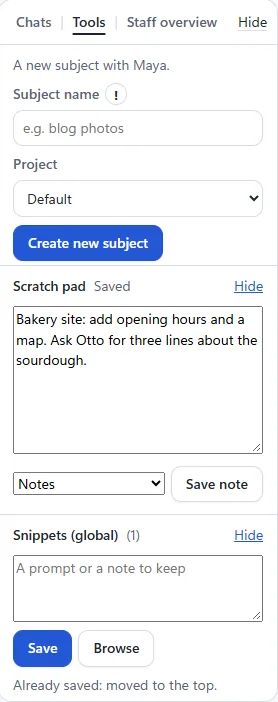
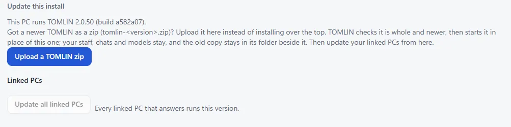
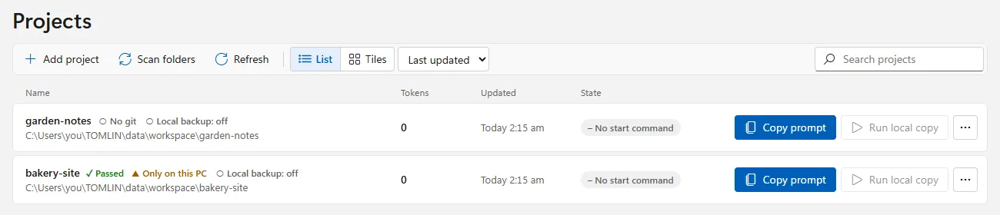
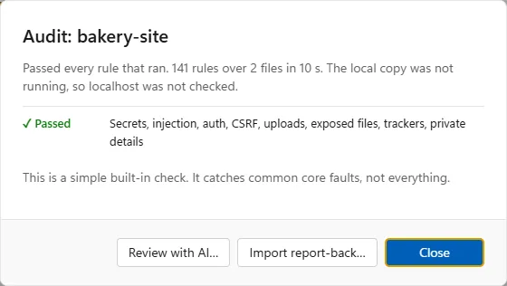

This PC's address (type it on the main PC if Find does not see it)
Can other PCs reach this one?
Checks this PC's network type and firewall. Nothing is changed.
Copy gives one line that runs the lines above. Start menu, type PowerShell (or cmd), right-click, Run as administrator, paste, press Enter. Then press Check again.
Advanced: port
The link is encrypted. All files sent over the network are encrypted. The node keeps no history of work done, with two exceptions: a finished answer the host has not collected yet is kept encrypted for up to 3 days (then deleted, or deleted as soon as the host collects it), and token counts are logged for each project, by its name. Backups (from host, if enabled above) are not encrypted.
Other PCs
On the other PC, tick Enable this PC as a node. Then find it here.
Not found? Type its address instead
Linked
Copy a model a linked PC shares, or keep a restore point there.
Models on this PC
List of models on this PC. Runs speed tests to see what works well.
Update this install
Got a newer TOMLIN as a zip (tomlin-<version>.zip)? Upload it here instead of installing over the top. TOMLIN checks it is whole and newer, then starts it in place of this one; your staff, chats and models stay, and the old copy stays in its folder beside it. Then update your linked PCs from here.
Linked PCs
Models
Search filters
All models
Download
Download any compatible gguf file from Hugging Face and move the folder into:
Connect
Already have LLM files for another manager installed? Select the folder containing the files so that you have 1 folder for all your LLM's.
Settings
For the whole app. A model's own settings (where it runs, how many cores, its context) are under the gear beside its Connect button; a person's are in Staff.
Help
On this page: One PC first: · · · Your network: · · · · · · More: · · · · · · · ·
Start with one PC: put a model on it, hire someone to work on it, and keep what they make in a project. When that works, link your other PCs and spread the team across them. The pictures on this page were taken on a test copy with made-up staff, PCs and addresses.
One PC first
1. Installing models
A model is the software your staff think with: a chat model writes, a picture model draws. Open Set up, Add a model (the Models page). Search by name or by what it is for, narrow it with the filters on the left (size in billions of parameters, B, or in GB, and the kinds of model), and each row shows its size before you press anything. Download takes the recommended size in one press and turns into the download's progress; a model you have says ✓ On this PC. Chat models come from Hugging Face; picture models, helpers (the background remover) and the model runners come from TOMLIN's own list.
The Models page. "File list from …" is the list of Hugging Face models kept on this PC (see 9. Scanning).
What fits this PC: bigger models answer and draw better but need more memory and time. lists each model with whether it fits and about how fast it runs. Hire staff shows the memory each model needs, too. Times below were measured on an Intel HD 520 laptop and a 32 GB CPU-only desktop. A token is about three quarters of a word.
Model files you already have: chat models are .gguf files: put them in TOMLIN\models\chat in your user folder (Models lists what is found).
The runners are the programs that run a model. The ones for the processor and for any graphics chip (Vulkan) come in the zip; the ones for an NVIDIA card (CUDA) are under Model runners on the Models page.
Chat models
Pick for
Model
Download
Measured
Good to know
Fastest, low-end PC
Qwen 3.5 0.8B
0.5 GB
Laptop: first word 8 s, 17.7 tokens a second
Quick and simple; loses the thread in long chats.
Fast, better answers
Gemma 2 2B or Qwen 3.5 2B
1.7 GB / 1.3 GB
Gemma 2 2B, laptop: 6.4 tokens a second. Qwen 3.5 2B: not timed
Gemma 2 2B was the warmest of the small ones.
Balanced, 16 GB RAM
Qwen 3.5 9B
5.7 GB
Not timed
Clearly smarter; slow without a graphics card.
Best quality, 32 GB RAM
Qwen 3.5 35B-A3B
22 GB
32 GB desktop, CPU only: first word 4.6 s, 5.2 tokens a second
Best answers. Only 3B of it works on each word, so it runs like a small model, but it needs about 24 GB of free RAM.
Avoid without a graphics card
12B "dense" models, e.g. Mistral Nemo 12B
7.5 GB
32 GB desktop, CPU only: first word 51 s, 2.1 tokens a second
Every word reads the whole file, so a CPU crawls.
Picture models
Pick for
Model
Download
Measured
Good to know
Fast, photos (blog)
Realistic Vision 6 + LCM (SD 1.5)
2.3 GB
Laptop, 512 px, 4 steps: about 50 s on the HD 520 graphics, about 3 min on the CPU alone
Photo-like pictures. It cannot draw flat icons: it draws a photo instead.
Fast, icons and drawings
DreamShaper 8 LCM (SD 1.5)
2.1 GB
Not timed (same size as the one above)
Illustrations, icons, cartoon looks.
Better photos, graphics card 4 GB+
Juggernaut XL or RealVisXL (SDXL), 8-bit
About 4 GB
Not timed. Not in TOMLIN's Models list yet
A clear step up for photos, drawn at 1024 px. Check the licence of the version you download.
Best quality, NVIDIA card 4 GB+
Qwen-Image 2.1 (7B)
9.9 GB
Not run yet
Much better pictures and readable text. Non-commercial licence: not for a business blog.
Fast and sharp, strong PC (suggested)
Z-Image Turbo (about 6B)
About 4 to 6 GB, 8-bit or 4-bit
Not run here. Suggested by a reader; not in TOMLIN's Models list yet
Draws good photos in about 8 steps. On a CPU-only laptop it would still take many minutes a picture, so it suits an NVIDIA card. Check the licence of the version you download.
Changing a picture you have (suggested)
FLUX.2 klein (4B, or 9B)
About 4 GB (4B) or 7 GB (9B), plus its text model
Not run here. TOMLIN cannot edit pictures yet
Made for "change this picture" as well as drawing from words. The 9B is understood to have a non-commercial licence, so for a business blog look at the 4B first.
Looking at pictures (picture to text)
Today's chat models cannot see, so alt text comes from the prompt. These can describe a picture; none is installed or tested here.
Pick for
Model
Download
Measured
Good to know
Captions and alt text, any PC
Florence-2 (base or large)
Under 2 GB
Not run here
Tiny and very good at "describe this picture". Runs on a CPU. It describes; it does not chat.
Seeing and chatting
Qwen3-VL 2B or Gemma 3 4B (with its vision file)
About 2 to 4 GB
Not run here
A chat model that can also look at a picture you give it. Runs in the same runner as the chat models.
Getting a good picture
Photo for a blog: Mode "Blog / photo" with Realistic Vision. Describe it like a photo: "a reading chair in a sunlit living room, 35mm photo, natural light". For a wide picture, set 768 × 512.
Drafts, then full quality: the 4-step drafts are for choosing. Open the one you like and press "Re-run at full quality": same seed, sharper hands, keys and skin.
Cartoons and cartoon profile pictures: use DreamShaper, Mode "Cartoon" (or "cartoon" in the prompt). "cartoon profile picture of a friendly baker" draws a square head-and-shoulders picture; then press "Set as profile photo" and pick whose it is. DreamShaper sometimes draws a ring round the head for these.
Icons: use DreamShaper. A photo model in Icon mode reads "plain white background" as a studio photo shoot and often adds a person. With a photo model, try "product photo, isolated object, light grey background".
People: say who, with an age ("a woman in her 30s"); left out, the model tends to draw someone young. For no people, put "people, person" in the Negative prompt and use full quality: the fast drafts (CFG 1) ignore the Negative prompt, and "no people" in the prompt itself can add one.
Weak spots: hands, close-ups of keyboards, and any text or signs. Wide shots come out best.
2. Hiring staff
Everyone you talk to is someone you hire (the host, a separate assistant, is switched off for now: your old chats with it are kept to read). A hire ties three things together: the specialist (their role and level), the software (the model they think with) and the hardware (the PC that model runs on). Hire staff (Staff: hire and edit, in the left panel or under Set up) is one page: their look, name, role and level on the left; on the right Assign a PC, then Choose a model: the models on that PC as cards, each with the memory it needs (a card says when a model is a tight fit or needs more memory than is free).
A coder on this PC. All models, at the foot, lists the models your other PCs have and this one has not.
The role: Default, Coder, Writer, Project manager, Graphic designer or Artist. Default is the model as it is, with nothing of ours sent (no instructions, no memory, the model's own settings), as in a plain chat window. An artist or a graphic designer draws with a picture model.
The level starts at the size of the model picked (change it if you like: it only orders the models suggested to them). Their name comes from the model (Qwen, Gemma…) unless you type one.
All models, under Choose a model: the models (of the role's kind) on this PC and the linked PCs that the PC picked has not got, each with "On <PCs>" and Copy to <PC> (from one linked PC to another it goes through this PC). When the copy is done the model is in that PC's list and picked.
Later: give each a first choice model and a fallback under Edit Staff (the pencil beside them). Firing someone (Staff, Edit, Fire) opens the office on them: the boss walks in, they pack a box and leave by the front door.
Look (Change look in Hire staff, and under Edit Staff) draws each hire as a little person: gender, skin, hair, hair colour, top, glasses, facial hair and headwear. It is their round picture wherever they have no profile photo (a photo, when set, still shows instead), and how the office draws them. Press a person in the left panel to talk to them. An artist's chat draws what you type there, exactly as typed; a picture asked for in any other chat is pointed to the artist. The chat shows the model of the chat open now; every model loaded is in the top bar.
The office (Staff overview)
Watch: the office full screen, with the shop beside it. Here the boardroom and the lounge have been furnished.
On the right of the chat, Chats | Tools | Staff overview (Home's right panel has Waiting for you | Staff overview): Staff overview shows each hire with their role, the model they run and on which PC, how they are now and what they are doing, with Talk and Edit. At its top is the office: each hire as a little person at their PC's desk while their model loads, reads, thinks, types or draws (a long think, over 15 seconds, goes to the boardroom once it has a table; until then it stays at the desk). With nothing to do they stay at the desk for 2 minutes, then stand up and stretch in the room, after 5 minutes go to the kitchen or the lounge (to what it has), and after 10 minutes take a break in a deck chair on the beach if one is free (On a break, a green cup). While their PC is off they are out of the front door on holiday, lying on a towel on the beach (PC off, a grey power mark), and the PC sits in the far corner in cobwebs. Press a person (or their card) to follow them; in a chat it follows the person you are talking to. Watch opens it full screen (Esc closes it). Press a person to see what they are holding. A PC linked while you watch is carried in and set up by IT (and carried out when removed); a project step brings a folder of work to the desk; up to two people with nothing to do join a long think in the boardroom, one to each chair left over; someone whose PC is in use by its owner is away: in the lounge (by its window while it is empty), asleep in the armchair, or helping a brainstorm.
In the full view, Award employee of the month gives it to whoever wrote the most tokens this month (their portrait goes on the lounge wall, with a 20% off voucher; the frame opens who won and this month's tokens by person). Buy them pizza brings a pizza to the kitchen for everyone with nothing to do. Look after the team, beside the office (under it on a phone), is the shop: picture cards, each with its price, a tick once bought, and how many tokens are still to go. It spends the tokens your staff have written ("To spend", under the title). Treat the team: Pizza (free) and Donuts come to the kitchen table, Coffee is delivered: a courier brings each of them a cup, wherever they are. Improve the office: the boardroom and the lounge start empty in every office and are bought piece by piece, each once: the boardroom table (a long think goes to it), its chairs a pair at a time up to six (the thinkers sit first; each chair left over seats a helper), the whiteboard; the lounge's armchair, bookcase, sofa, TV and gym equipment (each a place to rest); and up to six deck chairs with umbrellas on the beach, for breaks. This week's leaderboard is under the office.
3. Saving your work
Every chat is kept on this PC, so closing TOMLIN loses nothing that was finished. These keep the work where you can find it again.
A real answer from a small model on this test copy. Save, on the code block, puts the code in a file.
Projects: a chat belongs to a project (the Project list in the chat's top row; Default is no project). Chats, on the right, lists every chat under its project, each as the person and the subject. A project made in TOMLIN is a folder in your workspace, and the Bridge (Projects, in the left panel) shows every project folder; see 8. Git.
Save on a code block in an answer puts that code in a file in the Files folder (Replace when the file is there; the old one is kept as .bak): a chat in Default saves into its own chats folder (named with when it started), and putting the chat in a project moves those files into the project; in a project, a writer's work goes into its specialists\writer folder, named with the date and time.
The whole chat: Save and Copy at the end of the chat's top row save it as a text file or copy it. The copy icon in the top right corner of a message you sent copies it.
Subjects: in Tools, type a subject name, pick its project (the open chat's, to start with) and press Create new subject, and its messages (or an artist's pictures) stay in that subject, in that project; the same name in another project is another subject.
Scratch pad: notes kept as you type. Save note files it in the notes folder, or in a project's admin notes, named with the date and time.
Snippets and prompts: Snippets (global) keeps prompts or notes to use again (Browse lists them all with Copy on each). The save icon in the corner of the message box (Save to prompts) keeps what is typed there, with a subject if you like. Scratch pad and Snippets are the same in every chat and no model reads them. The Bridge has its own Prompts page too, a tile per category.
Send to… under an answer hands it on: the card shows the words (or only the part you picked in the answer) to change first, Copy, and "Write it as a prompt for…" (a picture prompt for an artist, a brief for the coder or the writer); Send opens that person's chat (or the subject you name) and sends it at once, loading their model first if it is not loaded. The blog writer's picture button opens the same card with the picture prompt it wrote, so you see it before it is drawn.

Tools: subjects, the scratch pad and snippets.
A chat's writing tone is in the chat's gear for the host, and in each hire's profile (Staff) for them. If the connection to a linked PC is lost while it answers, it finishes the answer and keeps it: Reconnect under the words so far collects it (it is also collected by itself once a minute).
Your network
Another PC in your home can lend its models and its memory: a node. Your staff, their memory and their chats stay on this PC; the node only loads the model and answers (or draws).
4. Adding a node
On the other PC, install TOMLIN, then Set up, Nodes and memory, tick Enable this PC as a node (a node must have the app lock, so it asks for that PIN first). Give it a name, tick the models to share with others (chat models answer, picture models draw) and press Save the list. Its Setup Code is shown there.
On the node: its name, setup code, the models it shares and what linked PCs may do.
Then on this PC: Nodes and memory (or Link another PC), Find PCs on my network, and type the setup code beside the PC it finds. Not found? Not found? Type its address instead takes the address shown on the node ("This PC's address"); on the node, Can other PCs reach this one? Check says whether its network type or firewall is in the way, and gives the lines to fix it. Also ask for a PIN on the node adds a link PIN (never its app lock PIN) to type as well. The link is encrypted and the node keeps no history of the work, except a finished answer this PC has not collected yet (kept encrypted for up to 3 days) and token counts for each project, by its name.
Linked PCs on this PC: what each has loaded, its memory, and what it lets this PC use.
Then hire staff on this PC as usual and pick the node under Assign a PC and one of its models under Choose a model (or change it later in Edit Staff): each reads like Qwen3.5-9B on "Worker PC". An artist picks one of its picture models the same way. Two PCs can use the same node: while its model works for one, the other waits. On the node, Nodes and memory says which models linked PCs are using now, and someone at the node is asked first ("Using this can impact connected users", I agree) before using one of them. Staff hired on a node and lent out are retired: their old chats are kept to read.
What linked PCs may do on a node is ticked there, under Sharing permissions (each tick asks the app lock PIN; Allow all ticks all four): Sharing of models lets them copy the shared models, Enable backups lets them back their projects up there and keep restore points (6. Backups), Allow host to push models lets them install one of their models there (shared from then on), Allow host to update TOMLIN remotely lets a newer TOMLIN be installed there (7. Models and software).
5. Moving staff between PCs
Drag a person onto another desk in the office, or drag them from the left panel onto a PC, to move them. The Move window opens: the software they run on there (their own model, when that PC has it), and they carry their box over to the new desk. A PC that is off or in use by its owner does not take a drop; nor, in the left panel, does a Backups only PC.
A model too big for that PC is not offered, and the window says why.
Only a model that fits that PC's memory can be picked. TOMLIN works out what each model needs (its file, its working memory and the runner) and compares it with that PC's memory as a whole: its RAM, with 3 GB kept for Windows, and the memory of its graphics cards (every card counts; a model is spread over them and the RAM). A model that will not fit is shown greyed with what it needs, and named under the list; one that only just fits says "tight fit". When none fits, Move them is not offered: send a smaller model there first, or move them to a PC with more memory. TOMLIN checks again when Move them is pressed, so a move never goes through to a PC that cannot hold the model. A PC whose memory is not known (while it is off, for example) is not checked.
When that PC has not got their model, Send <model> to <PC> sends a copy first (the node must tick Allow host to push models), and My local LLMs shows it go.
6. Adding backups
Your other PCs can keep copies of your projects and of TOMLIN's own data, over your home network, with no internet needed.
Let a PC keep backups: on that PC, Nodes and memory, Sharing permissions, tick Enable backups.
Backups only: tick it on a linked PC's card on this PC (Nodes and memory, Linked). No staff, chats, jobs or pictures run there, and no model is copied to it; it is first in line for project backups. Its card says what it keeps and how much disk is free.
Project backups: tick Copy this project to my other PCs in a project's git window in the Bridge (8. Git). From then on it goes to your linked PCs that have Enable backups ticked every 10 minutes when it changed, and only what changed is sent; each PC keeps the older versions too. In My local LLMs, Back up projects now sends them at once and Bring projects back puts a copy in a new folder, never over the project.
Restore points (your chats, staff and settings): My local LLMs, Back up to it now beside a PC keeps one there (the newest 3 are kept); Restore points kept there lists them, and Bring back puts one in this PC's backups, which Settings, Your data and updates, Put back uses.
My local LLMs: the models your PCs share, and the backups kept on them.
7. Backing up models and software
Models are big, so keep them on more than one PC instead of downloading them again. My local LLMs (Nodes and memory, Linked, and the Models page) lists every model the linked PCs share: Get a copy from <PC> brings one here over your home network, so a model you deleted to save room comes back without downloading it again. A copy that was cut short carries on from where it stopped. The other way, Send in the Move window, and Copy to <PC> in Hire staff's All models, put a model on a linked PC (that PC must tick Allow host to push models). A Backups only PC keeps projects and restore points, not models: to keep a spare copy of a model, keep it on another linked PC that shares it.
The software: Nodes and memory, Update this install says which TOMLIN this PC runs. Upload a TOMLIN zip takes a newer version: TOMLIN checks it is whole and newer, then starts it in place of this one; your staff, chats and models stay, and the old copy stays in its folder beside it. This needs TOMLIN started by its installed program or by Start TOMLIN.cmd. Then Update all linked PCs updates each linked PC that is behind and allows it.

One linked PC at a time: when it runs an older TOMLIN, its card has a yellow (!) and its window says Outdated: 2.0.32 (this PC 2.0.33) with Update it, or why it cannot be updated from here. On that PC, tick Allow host to update TOMLIN remotely first. Only the files that changed are sent; that PC puts the new version in a folder beside its copy (the old one is kept for going back), backs its data up, and starts the new version in the same window, once nothing is running there. It must run as the installed TOMLIN (Install TOMLIN.cmd) or from Start TOMLIN.cmd. A PC older than 2.0.33 cannot be updated this way: install the new version there by hand once.
8. Adding git
Projects in the left panel opens the Bridge (built in, in its own look): every project folder in your working folders, with its local copy (Run local copy, Stop), its git marks, a built-in audit, Hosted live lights for a site you host, Push live (one press sends it to your cPanel, FTPS or SFTP host, off until you turn it on), your saved prompts, and the tokens your AI tools used on it. Start with a hire, in a project's … menu, opens the Send to card here with the words, to send to one of your staff. Its own Help page says what each part does. Used Myia Bridge on its own before? Its About page has Bring in from Myia Bridge.

Git keeps a saved history of a project, and a copy on GitHub (or another host) is its backup. Each project shows its mark: ● Backed up, ▲ unsaved, ▲ not pushed, ▲ Only on this PC or ○ No git. Press a mark for the project's git window: what state it is in, See what changed (every changed file since the last save, line by line), and under What to do the exact commands to copy into a terminal (… menu, Open terminal here) to start git, save, link a GitHub copy and push. The Bridge only reads git: it never commits, pushes or changes a folder. The same window has Copies on my other PCs (6. Backups). About › Git in the Bridge says whether your Git program needs a security update.
A project's git window: its state, the commands to copy, and copies on your other PCs.
9. Scanning
Find PCs on my network (Nodes and memory) looks at every address on your home network for a PC with Enable this PC as a node on, at the port beside it (8741 unless changed there), 64 at a time; a home network takes a few seconds. It lists what it found, each with a box for its setup code. Nothing is linked until you type the code.
Rescan Hugging Face (the Models page, beside "File list from …") reads Hugging Face's whole list of GGUF chat models again, most downloaded first, down to the models fewer than 10 people downloaded last month (about 200 pages and 70 MB on 5 Oct 2026). The list from before stays until the new one is whole. A copy ships with TOMLIN, so the first search on a new PC already has one.
Scan folders (the Bridge's Projects bar) finds the projects that are new or gone in your working folders since the last scan.
Scan app (audit) (a project's … menu in the Bridge) runs the built-in audit: about 140 rules for keys, injection, sign-in and payment gaps, uploads, accessibility and what publishing the project would give away about you. It catches common faults, not everything; Review with AI… builds a prompt for the ones no rule finds.
Hosted live (the same menu) takes the address a project is hosted at: a green, amber or red light shows whether it answers, checked every 5, 10 or 15 minutes.
Find PCs on my network: two PCs found, each waiting for its setup code.

More
Jobs
A job turns a goal into small steps you read and change before anything runs. On Home, Lets create a project takes a project name, a mini description (optional) and the prompt, and makes the project's folder inside the workspace folder, named with the date and time; Staff, a list of each hire as name - software - PC, picks who leads it (Default is the strongest worker available; a hire on a Backups only PC is not listed), and Lets go! has them make the plan. Advanced project setup, under it, asks a few questions and lets you pick the look first. Each step sees only its brief and its files, and code checks every answer.
In Jobs, the left column has each job's Overview, its steps (press one to read and change it) and See all. The Overview holds the Scope card and the design brief (the copy icon copies one; the pencil changes it, with Cancel and Save), Choose a Project manager, and Roles: for the Coder and the Writer, assigned is the hire you pick, not assigned means the project manager does those steps, and default is a hire in that role, else the project manager; for Auditing (the reviewer and the end-of-job report), assigned is the hire you pick, not assigned means nobody audits, and default is the strongest worker available. What you expect of the final audit goes to the auditor with the end-of-job report. Run the next step saves nothing until you press Save; LETS GO!!! runs the rest, saving each step that passes the checks and stopping at the first that does not.
The queue
The queue lines work up so your PCs carry on without you. Add to the queue is in three places: in Jobs beside LETS GO!!! (a project; one saved on Home with no plan yet is planned first), in an artist's pictures pane beside Draw (one picture, or a list with one picture per line, for the project chosen beside it), and in a chat when that person's PC is busy with the queue (you are asked: Add to the queue, Send now anyway, or Not now). Each PC does one thing at a time; work for different PCs runs side by side. A picture is drawn whole (not a draft) by the artist on their own PC, kept in the gallery and put in the project's specialists\images folder. A project runs its steps as LETS GO!!! does: each step that passes its checks is saved; one that needs you waits for you in Waiting for you, and the queue goes on to the next thing. A picture step in a project is drawn by the queue, and the project goes on after it. To make room, the queue may unload a model it does not need now (a picture model for a chat model, or the other way round); on a node, only one loaded for linked PCs, and only on a node with 2.0.41 or later. A line put back because its PC was busy or off is tried again every 2 minutes, for up to an hour.
On Home, the Queue panel lists the lines in order, with the PC each runs on: the arrows move a waiting line, Cancel ends one (asked first while it runs), Stop stops what runs now (it goes back in line) and starts nothing new until Resume, Again puts back a line that did not finish, and Clear the list takes every waiting line off (asked first). What came back waits in Waiting for you: Review photos for each project, Review documents for a project that finished, Reply and answer for a chat, and what did not finish. Seen takes a line off. When TOMLIN is closed while something runs, it runs again the next time it starts.
Quick or Think
Beside Send, each chat has Quick (the start) and Think. Quick answers straight away. Think lets the model work the question out first and answer after: better for sums, code, plans and anything with steps. It takes longer because every word of that working is written out, at the same speed as the answer, before the answer's first word; on a small PC that can be minutes. The working is folded above the answer ("Thought for 40 s"): open it to read it. It is kept with the answer but never sent to the model again. While it works, Answer now stops the working and asks for the answer with what it has worked out so far; TOMLIN does the same by itself when the working goes round in circles or runs very long, and says so under the answer. Only models that can think do it (Qwen 3 and 3.5); others answer straight away and say so. Reasoning models (DeepSeek R1, QwQ) always think, even on Quick. Small models overthink: on a 2B, Quick is often the better choice.
Memory
Memory is what a person keeps between chats: lines you write or pin, read before each answer. Each hire has their own; the team memory is read by everyone. Type remember: … in a chat to add a line without a model (remember for the team: … for the team). Memory, under the chat box, shows each line to change or delete; at its foot, "What they read for the next answer" shows how much of the model's room each part takes (instructions, memory lines, the chat so far) and what was left out.
Speed
Every answer is timed: tokens written a second, and how fast the prompt was read (a token is about three quarters of a word). Test speed runs one example prompt (about 150 words) on a person's model, a linked PC's or a model here, and times it; it is under Edit Staff, on Nodes and memory, and under Staff on other PCs. The left panel shows each person's expected speed ("17 tok/s"): the average of their last answers once there are three, else the test. A person's Speed shows the test as the baseline, the average, and a chart of the recent answers. Only numbers are kept (in speed.json), never what was asked or answered.
Uptime and costs
Press a PC in the left panel (My PC, or a linked PC) for its window: how long TOMLIN has run there and how long the PC has been on, how many of this PC's once-a-minute checks it answered in the last 7 days, and its total tokens (read and written, from every answer its chat models wrote, for anyone; pictures are not counted). Give it, if you like, its power draw while a model works (watts) and the price of a kWh in US dollars: then each project's power cost is worked out (watts × working hours ÷ 1,000 × price), beside the same tokens at the Claude Opus 5.5 API's and the ChatGPT API's list prices, with the least of them marked. Only working time counts, never the PC sitting idle. Tokens are counted three ways: read new, read from the cache (the start of the chat the model read on the turn before: no work, but an API still bills it at its lower cached price), and written; the API figures price them that way, and say what they would be without caching. Each linked PC keeps its own log of the work it did for this PC, per project, and that log is the final tally (read once a minute and when its window opens); a project's Overview shows its tokens and cost over every PC. The prices were checked on the date shown and can be changed there. A linked PC needs 2.0.40 or later for its own log (2.0.39 for uptime and totals).
Installing
Installing: unzip, then double-click Install TOMLIN.cmd. It asks first, needs no administrator, adds TOMLIN to the Start menu and Settings > Apps, and runs it with an icon by the clock (no black window): the icon opens it, starts it again or quits it. Your data stays where it was. Windows may warn the first time ("More info", "Run anyway"): the installer is not signed. Welcome to TOMLIN.html, beside it in the zip, says what TOMLIN is before you install.
Repair install (My PC, in the left panel; also in the icon's menu by the clock) puts an installed TOMLIN back in order without a zip: when a copy started from a folder (Start TOMLIN.cmd) ran and took the updates from linked PCs, it copies that copy into the install; it builds TOMLIN's program (TOMLIN.exe) again, points current.txt at the copy to run, and points the Start menu shortcut, the desktop shortcut and Start with Windows at it. It lists what it would do first and never touches your chats, staff, pictures or models. Then Start the installed one now closes the copy started from a folder, and the installed one takes over. In the same place: Shortcut to desktop, and Start on start up (Cancel start on PC start up when it is on). Started while TOMLIN already runs another way, the program by the clock opens that one instead of saying it failed.
The app lock PIN
The app lock PIN (the padlock in the top bar; Settings) locks the whole app. Lost it? Close TOMLIN and delete app-lock.json from TOMLIN\data in your user folder: the PIN is gone and the chats stay.
When something goes wrong
TOMLIN writes what went wrong (a model that would not load, a chat or job step that stopped, a fault in the app) to a log file, one a day, the last 7 days kept, in TOMLIN\data\logs in your user folder. It holds where and what went wrong, never your chats or files, so it can be sent to someone who helps.
New chat
Disconnected
Timings, PC, model and tokens a second under each answer.
Each hire has their own tone, in their profile (Staff).
Profile photo set.
Pictures
Disconnected
Only drafts are deleted, never pictures in the gallery.